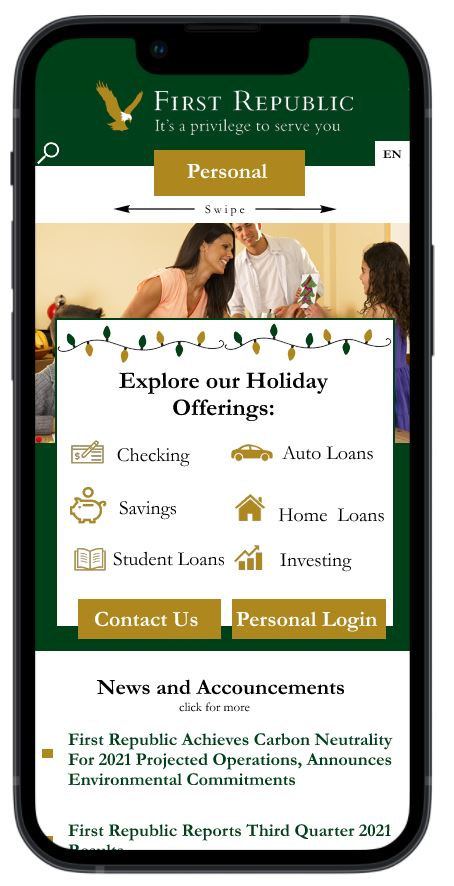

First Republic Mobile Redesign
UX Design —
Figma
Prototyping
Usability Testing
User Research
COGS 187A Fall '21
Background
Cogs 187A examines the cognitive basis of successful web and multimedia design. Class topics include information architecture, navigation, usability, graphic layout, transaction design, and principles of user interaction. Above all, this course is about developing 'good taste' in web design. This means knowing what makes a site work and what weakens its usability. My final project involved redesigning First Republic Bank’s mobile experience, including usability testing, competitive analysis, wireframing, Figma prototyping, and user testing.
In this project, I:
- Chose a mobile online experience to redesign
- Held 1:1 usability testing sessions to identify issues
- Summarised usability testing research into clear goals for a redesign
- Did a competitive analysis looking at other companies and how they addressed these specific UX challenges and what I should incorporate
- Wireframed several different solutions with different approaches to solving UX challenges
- Used figma to prototype two interactive prototypes
- Conducted usability testing on the prototypes
- Final recommendation and evaluation
My Redesign Choice
First Republic is an American bank that offers personal, business, and wealth management financial solutions. Their customer base are primarily high net-worth individuals. They try to set themselves apart from other banks by creating long-lasting personal relationships with highly customized customer experiences.
I chose First Republic because it has a stigma as being a bank that caters to old people: after all, if the goal is to build long term relationships, a lot of the client base will be older. My idea was to see how this site could be made more usable for people from my generation, to create a concept of what the site should look like in 50 years when my generation becomes First Republic’s type of client. I’m also interested in going into the finance sector and I thought this would be a fun way of looking at UI design in that field.
Usability Testing
The first step was to build out a user testing plan and to find some users who could help me identify the weakness of First Republic’s mobile site. I prepared an interview plan with tasks, questions, and methods for observing the user. I then found four users to test with, three younger users and one above the age of fifty. The interviews lasted 30 minutes to an hour, and I recorded all of the interviews including our conversations and the participant’s screen.
After the usability testing, I translated all of the results into a detailed analysis which includes the top 3 usability errors each user faced as well as any of their responses or suggestions. I evaluated the data using Nielsen’s 10 Usability heuristics to identify several categories for improvement.
These are some of the issues idenfitied:
- Younger users thought the customer reviews in the foreground were a bit tacky
- The home page gives little information about system status, and doesn't indicate anything about the scope of the site'
- Although the menu slides, none of the pages are used for usability in any way
- The home page makes very little use of icons
- There is no search feature visible on the home screen, which could be helpful for some users
- The contact us screen is very light, and could offer more online resources for the user. Calling is a bit of a last resort for younger people
- A lot of users reported they would not care to read articles since they are written by the company itself which could be biased
- The hamburger menu gets cluttered quickly and doesn't give the user a good sense of the offerings
- Some categories on the hamburger menu are in unexpected places, like where things related to business are located on other pages like "Client Resources"
- There are 6 different sign in options and they could be presented in a much clearer way
The next step is to narrow down 3 areas to improve. Given the issues discovered in the usability testing, I went with:
Visibility of system status: The navigation doesn’t do the best job at conveying the scope of Firstrepublic’s website and their offerings. The hamburger menu only contains a fraction of the pages on the site and is a bit convoluted and confusing.
Aesthetic and minimalist design: Firstrepublic’s navigation element is cluttered and text heavy. Segmenting it into more pages and making the hamburger menu a more prominent part of the site would make it more functional. Moreover, the site feels text heavy and could do a better job at minimalism. Areas could be better designed with images and intuitive elements.
Flexibility and Efficiency of use: Firstrepublic’s site misses the mark in terms of efficiency and flexibility. The lack of any usable elements on the homepage feels a bit wasted, the UI is hidden in a hamburger that could be more prominent, and the site lacks language selectors. A few of the users relied more on the search function than on the hamburger menu itself.
Goals:
Based on the first user test, FirstRepublic’s mobile site does a great job with its content, but navigating around that content is not always smooth and easy. The reliance on the hamburger menu is fine in itself, but the menu could be implemented in a better way. Fundamentally, my redesigns will address the site's navigation. I will create a prototype redesigned hamburger menu and a bolder design that uses different navigation.
- Redesign the site’s navigation, while maintaining all the product lines on a single site
- Keep the same color scheme, it's important to the brand
- Decrease the site’s text load, develop a greater reliance on icons and images
- Declutter or replace the hamburger menu with a more mobile friendly solution
- Decrease the reliance on customer feedback, as it impedes too much on the site’s usability, especially on mobile.
- Make the system status more visible. Making it easier to understand the scope of the offerings without relying entirely on a hamburger menu.
- Make it easier to browse online support before having to call
Competitive Analysis
Banking sites have to cover a very diverse range of topics that are each very deep and complicated using a UI that is very limited in space. They have to bridge the balance between commercial business with consumer’s basic needs of replacing lost credit cards or opening a new checking account. Banking sites require flexible UI’s, and smart decisions about what information to prioritize
For my competitive analysis, I chose to stay within the realm of banking to see the types of solutions other companies have for this somewhat niche problem. I also wanted to stay in the realm of banking sites to see the different terms, and ways each product is sold, to better understand each company’s priorities
- Chase Bank USA
- Scotia Bank Canada
- Bank of America USA
Chase Bank USA
- Chase uses the most important space, the thing you see first, to sell a promotion
- Smart use of icons make it more intuitive to user
- The hamburger menu doesn’t have drop downs, but instead it slides over to show options. Looks more minimalistic and is better for mobile
- They do a good job of separating their business and commercial business from their consumer ones. They make it easy, separating things by category normal people would look for
- They have a language selector. Firstrepublic doesn’t have one at all.
Scotia Bank Canada
- Like Chase, Scotia uses the most important space to sell a promotion, with a big bright link to special offers
- This site uses a unique horizon tal scroll wheel with different categories to solve part of the navigation problem.
- The page allows you to compare products, and links to various things
- The search bar is better implemented and easier to see. Its more confident inspiring than the search button on first republic
- Like chase, when clicked, these buttons clear the entire side bar with new information instead of opening drop downs and forcing the user to scroll
- Like chase, when clicked, these buttons clear the entire side bar with new information instead of opening drop downs and forcing the user to scroll
- It has a language selector, unlike firstrepublic
- Scotia, like Chase, does a very good job of separates their offerings by having entirely different sites. Firstrepublic lags by having the same site for normal customers as well as commercial ones
Bank of America USA
- Like the others, Bank of America uses a hamburger menu with a sign in button
- The front space is used to sell a promotion
- Icons are used to show the different product offerings, right there on the home page
- A unique scroller menu gives you direct links to various products
- Full sized search bar is easy to see in the hamburger menu
- Bank of America separates their businesses using the Hamburger menu
- Language selector link in the hamburger menu on the bottom
Wireframing
Using Figma, I built 4 different wireframes of what the mobile home page could look like given what I had learned.
- Design 1 - Icons: Greater reliance on icons for looks and functionality
- Design 2 - Single Scroll Selector: Replaced hamburger menu with horizontal scroll menu
- Design 3 - Double Sliders: Added sliders for icons and sliders for main page content
- Design 4 - Redesigned Hamburger: Redesigned hamburger that is now full screen

Prototyping
With my four sketches in hand, I set out to create two high-fi interactive prototypes

Design 1: Redesigned Hamburger
My competitive analysis showed that an overwhelming majority of banking sites used
hamburger menus. For this reason, I wanted at least one of my designs to focus on a new
implementation of the hamburger menu. Design 1 is a redesigned hamburger menu that is
developed with more pages and that is a more pronounced part of the site.
- Sleeker hamburger menu that takes up the entire page, and contains several screens within itself to better organize the content. Makes it more official, easier to see, and the inclusion of icons makes the experience more enjoyable
- A language selector and a search button added on the center screen
- Redesigned login pages categorize logins based on the type of business, making it easier to login where you want
- A center screen with a promotion as a stronger call to action than a customer review
- Redesigned Personal banking page is brighter and less text heavy
- Contact page has been redesigned to match the hamburger menu
Design 2: Swipe Menu
I wanted one of the designs to explore UI options beyond the hamburger menu. Design 2
explores a bolder and more unique way of presenting Firstrepublic’s various product
segments. This design focuses around a slider menu, and the design feel is all around
swiping.
- A new swipeable UI easily takes you between home, personal, business, and commercial offerings.
- An updated home page with quick links
- Swiping also functions as a back button when inside the contact or login menus, creating a very smooth feeling UI flow
- A redesigned contact us menu makes it easier to browse online support information instead of only giving a phone number.
- A language selector and a search button added on the center screen
- Redesigned Personal banking page is brighter and less text heavy
Usability Testing the Prototypes
I built out a second user testing plan and found some users who could help me identify the weaknesses of my redesign and which of the two was more usable. I prepared an interview plan with tasks, questions, and methods for observing the user. The interviews lasted 30 minutes. Participants interacted with both prototypes for an equal amount of time, and the trial sequence was reversed for half of the participants. I recorded all of the interviews including our conversations and the participant’s screen.
What worked well in Design 1
- A lot of the users reported that this site was easier to use because it matched the current expectations and design aesthetic of banking sites. Design 1 featured a bit more recognition rather than recall.
- A few of the users also reported Design 1 felt a bit more classy, which would appeal more to the audience.
- Users like Login 1’s login menu better than Design 2
- Users liked the implementation of the articles and news on design 1, saying it was a bit sleeker and less text heavy
What didn't work well in Design 1
- The user test showed that Design 1’s contact menu was harder to use than design 2’s. Users preferred having icons
- Users didn’t like having the search icon in the hamburger menu, it was too hard to find
What worked well in Design 2
- Some users really liked the swiping menu, and thought it felt the best to use. It was more interesting and it better leveraged the mobile format. One noted it would be better for a younger audience however
- One user reported really liking having the contact menu on top of every page
- Users liked the icon directory for the news, announcements, and articles. It was a good match to system status
What didn't work well in Design 2
- Users reported that the swipe function in Design 2 might be bad for the target audience, which may struggle to coordinate swiping movements, or who may not be used to that sort of thing.
- The login page being compartmentalized based on the page you are on was a bit confusing to some users
- Some users thought the use of icons was overwhelming, and that this design ended up being too icon heavy
Recommendation
I recommend design 1. Overall, the users liked it a bit more, and It’s generally a bit more intuitive for the type of customer who would be using FirstRepublic. I think the better solution would be to prototype a third design with a combination of the features of both
What I learned
I learned a lot doing this project, one of the big ones being that user testing is a lot of work and patience! I also used figma for the first time, which I’m happy about, because it's actually very easy. I learned how to manage my schedule, and how to keep my stress level low by working on this project a little bit everyday, instead of rushing it at the last minute. I'm happy with how it turned out!
What I would do better next time
I think I could generally have made better use of research and have compiled more statistics and information on my user test. The fact I was soloing this project made it a bit hard for me to find users to test with, and I was limited in the time I had with each user given the holidays, and the last-minuteness of my project. If I were to redo it, I would want to test many more users and to have a much more thorough and detailed analysis of each test. I could also have done a much better job of testing with people who are in the ages of Firstrepublic’s users and who have similar incomes. Most of my users were younger men, which I’m sure skewed the results of my trials in one way or another. If I was to do this again in a more serious setting, the age range, income, and gender mix would have to be taken much more seriously. Additionally, I could have used customer reviews more creatively in my prototypes. Firstrepublic tries to set itself apart with its customer centered approach. Most of the users didn’t really like them, and neither did I, but I think I could have done a better job at implementing a few in my redesigns just to keep the branding there.
Instructor Feedback
Great. A very thoughtful and thorough analysis, creative and inventive designs, good prototype execution, and very solid user testing. The presentation itself was fairly bland and text-heavy. Remember to think about the design and usability of your report itself!